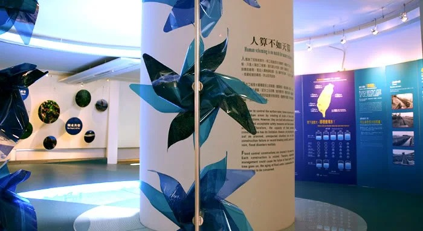
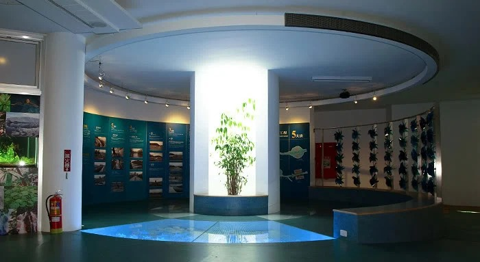
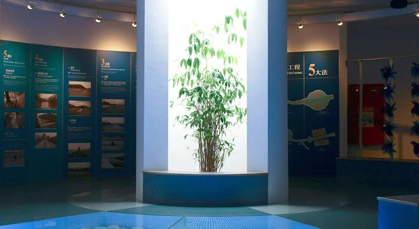
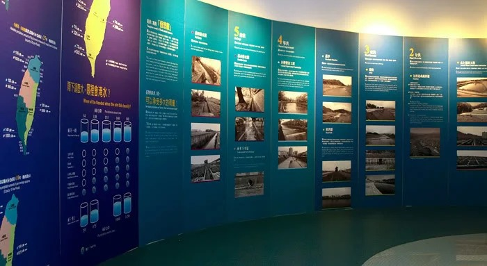
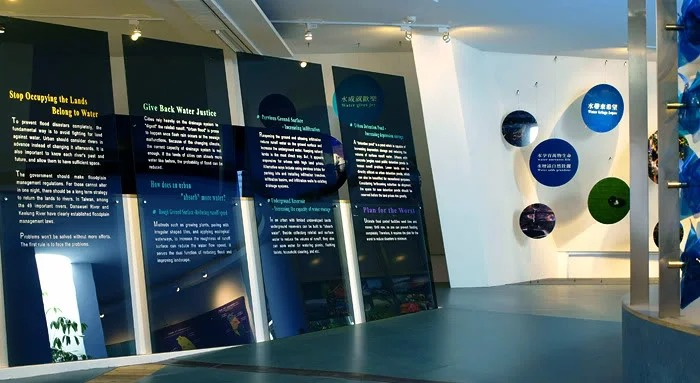
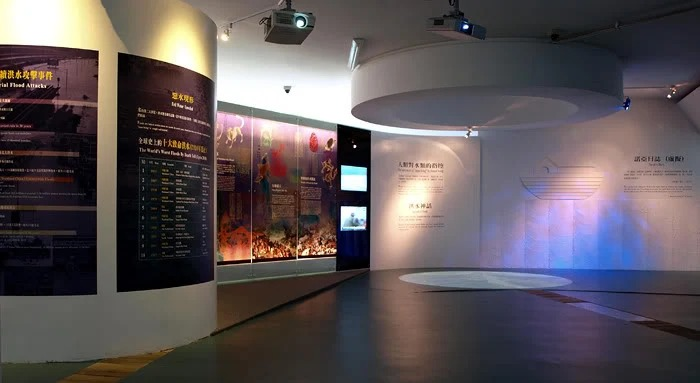
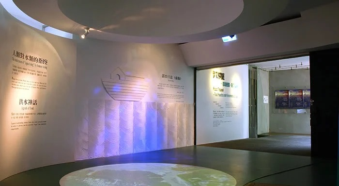

Disaster Prevention Hall 921 Earthquake Museum of Taiwan
At 1:47 in the morning on September 21, 1999, Taiwan was hit by its largest earthquake in a century. Central Taiwan lost buildings across a wide swath of the region, and the disaster exposed how unprepared both rescue agencies and the public were.
Given Taiwan's geology and location, earthquakes, typhoons, and rockslides are bound to happen again, and preparation can't be treated as optional. The old saying holds: forewarned is forearmed, and prevention is worth more than any repair that comes after the fact. That is the founding purpose of the Disaster Prevention Hall: give visitors the knowledge to take refuge and respond, so a correct understanding of disaster prevention takes root before the next event arrives.
Site Conditions
The National Museum of Natural Science's 921 Earthquake Museum sits directly on the original site of the Chelungpu Fault. The building was designed and built around the ground-level offsets the fault's rupture had left behind, so its walls follow a curved line rather than a rectangular plan, and the floor slabs between zones differ in height by roughly 100 centimeters. Because that curvature and those level changes are part of the original architecture, construction couldn't correct them the way a normal building project would; every layout had to follow the existing curves and level shifts.
It got more complicated from there: the original exhibition design had been drawn up from architectural plans alone, without anyone surveying the site in person, so the curved walls and floor offsets on paper diverged noticeably from what was actually there. Setting-out baselines couldn't be taken from the drawings at all. The crew ended up templating each zone by hand on site, matching the real curvature zone by zone, which became the project's central technical problem.
Demolition and Measurement
Work started with tearing out the existing exhibits, display walls, partitions, and fixtures. As each section came down, the crew measured and logged the actual wall curvature and floor-level offsets zone by zone, building the reference data that later setting-out and fit-out work would depend on. Nothing about the curved lines or level changes at the core of the building's original design was allowed to be altered in the process.
Fit-Out
With the drawings unreliable and the curvature and offsets impossible to correct or hide, the crew templated every zone directly against the real geometry. New display walls and circulation fixtures were built on free-standing frames that didn't attach to the existing curved structure; each zone got its own vertical and horizontal reference lines set out from actual conditions, which let the new work hold proper precision and safety margins even inside a curved, uneven shell.
The roughly 100-centimeter floor offset was bridged with a combination of gentle ramps and stairs, keeping the level change itself visible as a piece of the building's original design rather than smoothing it away. The exhibition floor also carries a large run of angled laminated glass panels fixed with metal hardware, each pane individually adjusted to the real curvature of the walls and floor around it, which raised the bar on both construction precision and structural safety.
Flooring throughout was replaced entirely with seamless, through-body vinyl imported from Sweden, colored consistently from surface to core, resistant to wear, with no seams for dirt to collect in, built to take heavy sustained foot traffic while meeting the slip-resistance and cleaning standards a public educational venue needs.
Result
Once construction wrapped, the building, built originally around the fault's own ground-level offsets, held a full set of interactive disaster-prevention exhibits without losing its curved walls or level changes, letting the architecture's own design vocabulary sit in the same space as its educational content. The idea behind disaster-prevention education, preparing before disaster strikes, is now something visitors absorb directly through the building and the exhibits inside it, learning to respond to earthquakes, typhoons, and other hazards.






